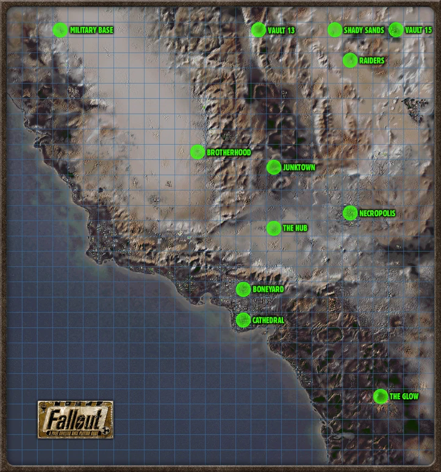
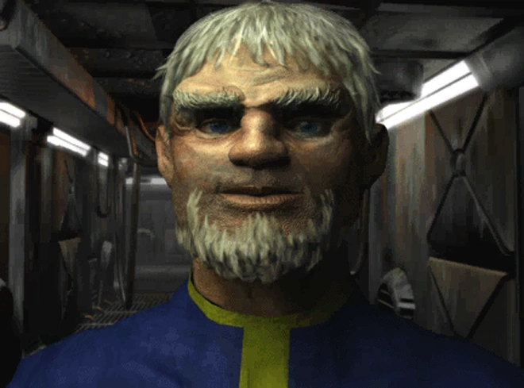
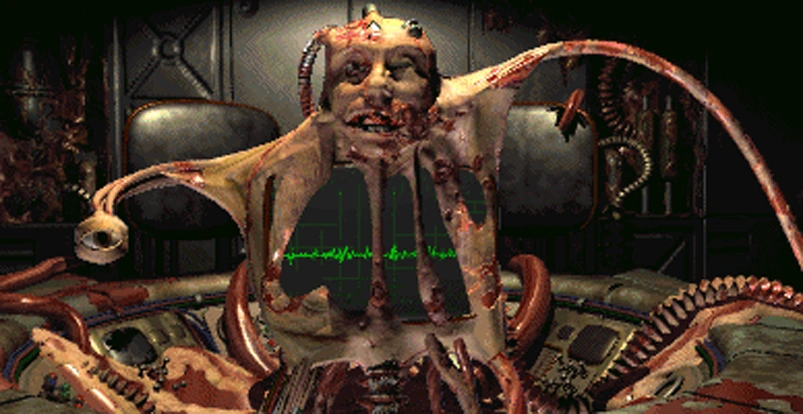
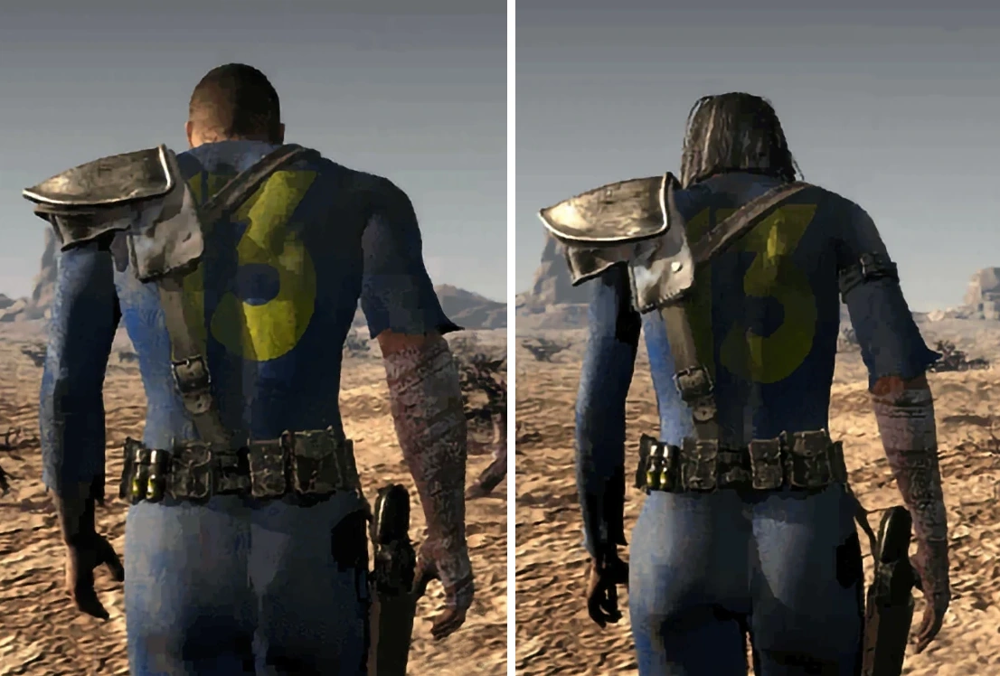
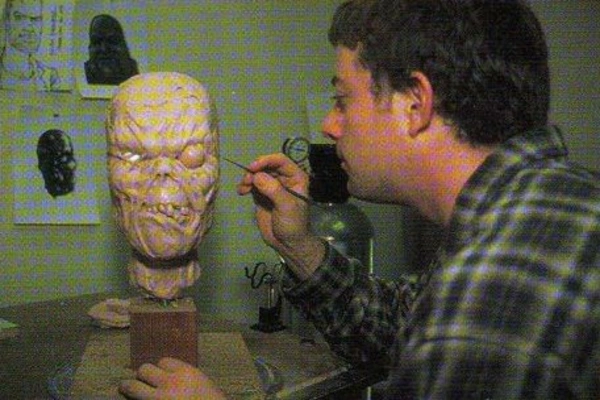
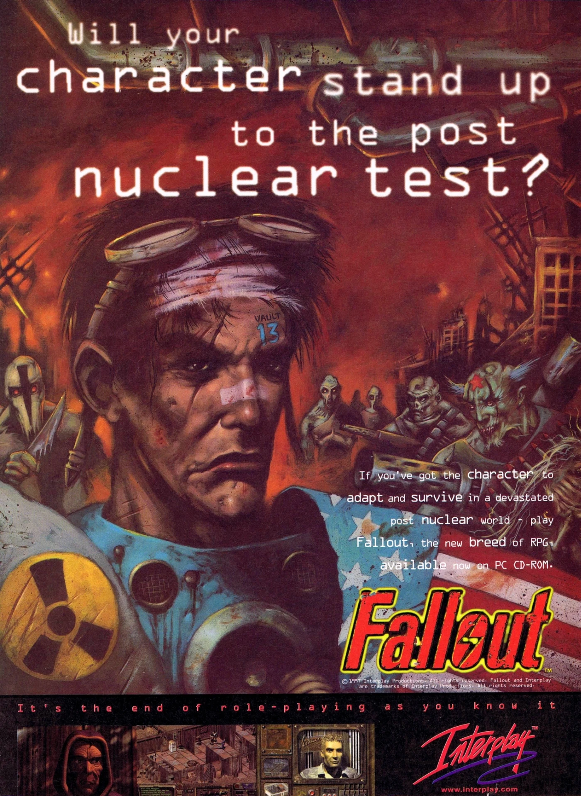
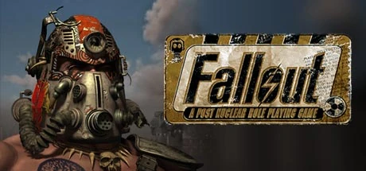
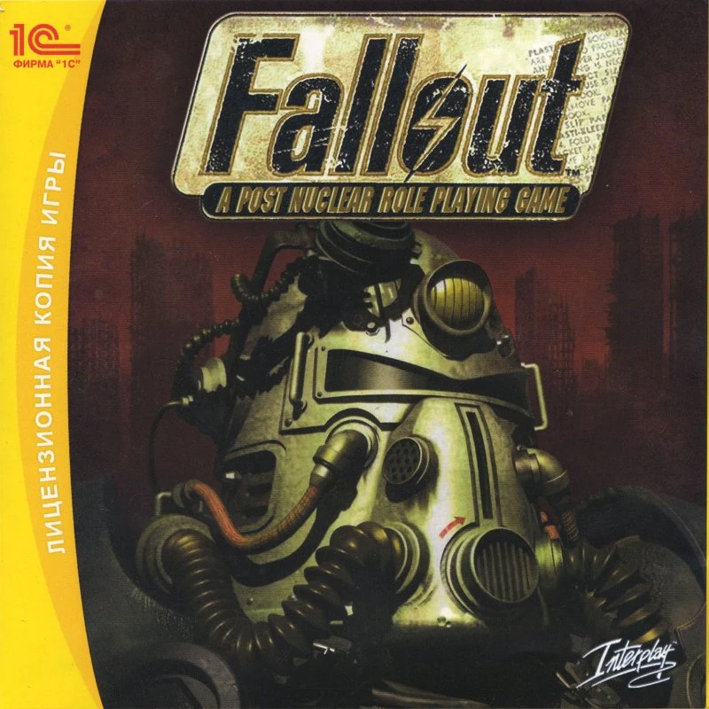
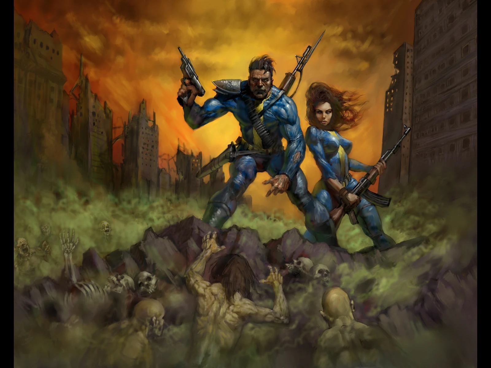

Fallout
A Post Nuclear Role Playing Game
「2077年、世界大戦の嵐が再び訪れた。
わずか2時間で、地球の大部分は灰燼と化した。
そして核の荒廃の灰の中から、新たな文明が立ち上がろうともがき始めるのだった。」 — ナレーター、Falloutイントロより
概要
Fallout: A Post Nuclear Role Playing Gameは、Interplay Entertainmentとその開発部門Dragonplay（のちのBlack Isle Studios）が開発したコンピュータRPGである。
1997年10月10日に発売された。
直接の続編として『Fallout 2』が制作されている。
1987年のCRPG『Wasteland』の「精神的後継作」と位置づけられており、核の残骸から這い上がる世界での冒険を、ターン制の戦闘と擬似等角投影ビューで描き出す。
ゲームプレイ
Falloutはターン制の戦闘と擬似等角投影（トリメトリック）視点を持つCRPGである。
キャラクター作成と成長
プレイヤーキャラクターには基本ステータス、特性、スキル、Perkが設定されており、すべて数値で表され、数学的公式に基づいてアクションの成功率が決定される。
初期ステータスはキャラクター作成時に選択する。
経験値はアクションの成功に対して付与され、十分な経験値を得るとレベルアップし、スキルポイントの配分と追加Perkの選択が行われる。
S.P.E.C.I.A.L.
FalloutではS.P.E.C.I.A.L.と呼ばれるキャラクター作成システムを採用している。
Strength（筋力）、Perception（知覚）、Endurance（持久力）、Charisma（カリスマ）、Intelligence（知力）、Agility（敏捷性）、Luck（運）の7つの基本属性の頭文字である。
開発者はもともとGURPSシステムの使用を意図していたが、開発プロセスの後半で新しいS.P.E.C.I.A.L.システムに移行した。
スキル
ゲームには18種類のスキルが存在し、0%から200%までランク付けされている。
レベル1での初期値はS.P.E.C.I.A.L.の7つの基本属性から決定されるが、ほとんどのスキルは0%〜50%の範囲に収まる。
レベルアップごとにスキルポイント（5 + 知力×2）が付与される。
プレイヤーは18のスキルのうち3つを「タグ」することができ、タグされたスキルは通常の2倍の速度で成長する。
| 分類 | スキル |
|---|---|
| 戦闘スキル（6種） | Small Guns、Big Guns、Energy Weapons、Unarmed、Melee Weapons、Throwing |
| アクティブスキル（8種） | First Aid、Doctor、Sneak、Lockpick、Steal、Traps、Science、Repair |
| パッシブスキル（4種） | Speech、Barter、Gambling、Outdoorsman |
ゲーム世界で見つかる書籍でも一部スキルを恒久的に向上させることができるが、序盤ではそうした書籍は希少である。
ただし、スキルが一定レベルに達すると書籍の効果はなくなる。
一部のNPCもトレーニングを通じてスキルを向上させてくれる。
ロックピックを装備するとロックピックスキルが向上するなど、装備品でもスキルが改善される場合がある。
ケミカルも一時的にスキルを強化できるが、中毒や離脱症状などの副作用を伴うことが多い。
特性とPerk
キャラクター作成時に2つの異なる特性を選択できる。
特性はゲームプレイに大きな影響を与え、通常は1つの有益な効果と1つの不利な効果を含む。
一度選択した特性は変更不可だが、「Mutate!」Perkで1回だけ変更することができる。
仲間NPC
ポストアポカリプスのウエイストランドでプレイヤーを助ける、さまざまなリクルート可能なNPCが存在する。
Fallout 2とは異なり、リクルートできるNPCの人数に制限はない。
ただしNPCのステータスやアーマーはゲーム全体を通じて変化せず、武器のみアップグレード可能。
- イアン — シェイディ・サンズにいる元キャラバンガード。最初に出会えるリクルート可能NPC。ピストルや10mm SMGを装備可能
- ドッグミート — 唯一の非人間NPC。ジャンクタウンのフィルの家の前にいる。レザージャケットを着るか、イグアナ・オン・ア・スティックを与えれば仲間になる
- タイコ — 元デザート・レンジャー。ジャンクタウン在住。ライフル、ショットガン、スピアを使える
- カチャ — 幻滅したフォロワーズ・オブ・ジ・アポカリプス。LAボーンヤードの図書館でリクルート可能。素手およびSMGで戦闘
ストーリー
設定

南カリフォルニアのワールドマップ
ゲームの舞台は大戦後のポストアポカリプスの世界。
2077年10月23日に起きた核戦争（大戦）は2時間足らずで終結したが、甚大な被害をもたらした。
大戦に先立つ資源戦争の最中、国連は解散し、カナダは併合されていた。
ゲームは大戦から84年後の2161年、南カリフォルニアを舞台にしている。
時系列上、Fallout 76の59年後、Fallout 2の80年前、Fallout 3の116年前にあたる。
シリーズとしてはFallout 76に次いで2番目の時代設定。
あらすじ

Vault 13の監督官がVault Dwellerを任務に送り出す
主人公はVault Dweller（Vaultの住人）として知られ、制作者ティモシー・ケインによれば、Vaultで育った20歳の青年であり、Vault住人の第3世代にあたる。
ただし、アルバート・コール、マックス・ストーン、ナタリア・ドゥブロフスキーといったプリセットキャラクターを選択することもできる。
物語はVault 13から始まる。
Vault 13のウォーターチップ（水のリサイクルとポンプ機械を制御するコンピュータチップ）が壊れ、監督官は主人公に代替品を探す任務を課す。
主人公はPip-Boy 2000を携え、わずかな装備で廃墟と化したカリフォルニアへと旅立つ。
プレイヤーキャラクターには当初150日間の制限時間が与えられる。
ハブの商人に水のキャラバンをVault 13に送るよう依頼すれば、100日の延長が可能。
ウォーターチップを持ち帰ると、続いて人類を脅かすミュータント軍の壊滅を命じられる。

マスター — 人類をスーパーミュータントに変えることで一つにまとめようとする存在
「マスター」（本名リチャード・グレイ）と呼ばれるミュータントが、戦前に遺伝子工学で開発されたウイルス「FEV」を使い、人類を「スーパーミュータント」の種族に変換し、「Unity」（統一体）という理想世界を実現しようとしている。
プレイヤーはマスターを倒し、FEVの供給源であるマリポサ軍事基地を破壊しなければならない。
両方の目標がゲーム内500日以内に達成されなければ、ミュータント軍がVault 13を発見し侵攻、ゲームオーバーとなる。
水の商人にVault 13の場所を教えた場合、この制限時間は400日に短縮される。
バージョン1.1ではミュータント攻撃の制限時間がほぼ撤廃され（ゲーム内最大13年）、自由な探索が可能になった。
エンディング

「Vaultのために」追放され、砂漠へと歩き去るVault Dweller
マスターの打倒とスーパーミュータントの軍事基地の破壊は、どちらを先に行ってもよい。
両方の脅威を排除すると、主人公は自動的にVault 13に帰還する。
そこで主人公はVaultと全人類に大きな功績を残したと告げられるが、同時にもし戻ればみんなもVaultを出たがるようになるため、「Vaultのために」追放されなければならないと言い渡される。
こうして主人公は砂漠への追放という「報酬」を受ける。
「Bloody Mess」特性を持つ場合やカルマが大幅に低い場合は、Vault Dwellerが監督官を撃つという非正史エンディングも存在する。
追放されたVault Dwellerは最終的に「アロヨ」を建設し、これがFallout 2の舞台となる。
Fallout 2の主人公「Chosen One（選ばれし者）」はVault Dwellerの子孫である。
ロケーション
- Vault 13 — Vault Dwellerの故郷。最初のクエストはVaultの壊れた浄水チップの代替品を見つけること。住人は誰も外に出ることを許されていない
- Vault 15 — かつて多様なイデオロギーの人々が住んでいた。過密と多様性から4つのグループが離散し、3つのレイダー集団（カーンズ、バイパーズ、ジャッカルズ）と、シェイディ・サンズを設立した1つのグループが生まれた
- シェイディ・サンズ — Vault 15の元住人が設立した小さな村落。指導者アラデッシュがラッドスコーピオンの退治を依頼。ここでイアンをリクルートできる
- カーン基地 — レイダー「カーンズ」の首領ガールに率いられたキャンプ。アラデッシュの娘タンディが誘拐される
- ジャンクタウン — 壊れた車の山に囲まれた町。店主キリアン・ダークウォーターが保安官を兼ねている。カジノオーナーのギズモとの対立が物語を生む
- ハブ — 主要な交易都市。ゲーム中最もクエストが豊富なロケーション。Water Merchants、Crimson Caravan、Far Go Tradersの3勢力がそれぞれの地区を支配
- ネクロポリス — かつてのベーカーズフィールド。Vault 12の跡地で、グールに支配された都市。ここでウォーターチップを発見する
- ボーンヤード — ロサンゼルスの残骸。エンドゲーム装備（ターボ・プラズマライフルやハードニング・パワーアーマー）のアップグレードが可能。カチャをリクルートできる
- ロストヒルズ — ブラザーフッド・オブ・スティールの本部。地下4階層で構成される
- ザ・グロウ — かつてのWest Tek研究施設。FEVとパワーアーマーの開発が行われた。高放射能地帯で、抗放射線薬なしでは致命的
- マリポサ軍事基地 — FEVの研究施設であり、新たなスーパーミュータントが生み出される場所
- カテドラル — Children of the Cathedralの拠点。地下にマスターが潜む秘密のVaultがある
開発
ティモシー・ケインはFalloutを「Bティアプロジェクト」であり、「問題のある」従業員が配属されていたと述懐している。
ただし実際にはほとんどの従業員と問題なく仕事ができ、真の問題はマネージャーにあったと感じていたという。
Falloutは3度もキャンセルされかけ、「価値のある」プロジェクトではないと言われていた。

トーキングヘッドの粘土モデル制作風景
当初はSteve Jackson GamesのGURPSシステムを使用する予定だったが、1997年2月12日にInterplayがGURPSの採用を取りやめ、独自のS.P.E.C.I.A.L.システムを開発した。
タイトルについてはチーム内で多くの案が出された。
一時は「Armageddon」に決定したが、Interplayの別プロジェクトが同名を使用予定だったため変更を余儀なくされ、残りの候補から「Fallout」が選ばれた。
なお元の「Armageddon」プロジェクトはその後キャンセルされたが、すでに「Fallout」として発表済みだったため、変更は不可能だった。
Falloutはアイソメトリックゲームだが、開発者はフル3Dも検討していた。
しかし1996年当時の3D技術の制約からアイソメトリックが採用された。
また当時の技術的制約から3Dキャラクターモデルの代わりに、トーキングヘッド（会話時の顔のアップ）は粘土で造形し、スキャン・テクスチャリング・アニメーション処理を行った。
これにより21体のキャラクターを、他のスプライトキャラクターと比べて豊かな表情で描写することができた。
1997年夏にリリース予定だったが、ランダムクラッシュを引き起こすメモリ上書きバグにより数か月延期された。
Falloutはフランク・ミラーとジェフ・ダーロウのコミックシリーズ『Hard-Boiled』や、Falloutのオープニングナレーターでもあるロン・パールマン主演の映画『ロスト・チルドレン』からインスピレーションを受けている。
入手方法
発売後数年にわたり新たなパッケージ版が発売され、通常はFallout 2やFallout Tacticsとともに1枚のDVDに収録された。
『Fallout Trilogy』（2004年）、『Fallout Anthology』（2015年）、『Fallout Legacy Collection』（2019年）にバンドルされた。
現在はSteamおよびGOG.com（DRMフリー版）で購入可能。
Epic Games Storeでも入手できる。
2017年9月30日のFallout 20周年にはSteam上で無料配布が行われた。
Fallout 76のPC版を予約購入すると、Fallout、Fallout 2、Fallout Tacticsが無料で付属した。
音楽
ゲームサウンドトラックはマーク・モーガンが作曲した。
海外版の検閲
ゲームは一部の海外版で検閲を受けた。
ヨーロッパ版（イギリス版、ドイツ版など）ではゲームからすべての子供が削除された。
これは子供を殺す可能性が含まれていたためだが、ゲーム自体はこの行為を積極的に抑止しており、行えばNPCからの敵対的反応、バウンティハンターの繰り返し襲撃、NPCの支援拒否などのペナルティが科される。
子供の削除はいくつかのバグも引き起こした。
評価
FalloutはMetacriticで89点のメタスコアを獲得した。
GameSpotは8.7点を与えて高く評価したが、NPC仲間のメカニクス面での不便さ（ドアをブロックする、味方を背後から撃つなど）を指摘した。
裏話
1998年には初代Falloutを映画化する企画が作られ、2000年にInterplay Filmsが開発することが発表されたが、プロジェクトは実現しなかった。
ギャラリー




すべてはここから始まった。
1997年に生まれた初代Falloutが、のちに数千万人以上のプレイヤーを魅了するシリーズの原点だと思うと感慨深い。
3度もキャンセルされかけた「Bティアプロジェクト」が、GURPSの権利問題から独自のS.P.E.C.I.A.L.システムを生み出し、タイトル名すら偶然の産物だったという開発秘話は、まさに核の灰から新しい文明が立ち上がるゲームのテーマそのものだ。
粘土でトーキングヘッドを造形するという手法も、技術的制約を逆手に取った創意工夫の極み。
そして何より、「Vaultのために」追放されるエンディングの切なさは、シリーズ全体を通じても屈指の名シーンだと個人的に思う。
This article was created by translating and editing Fallout from Nukapedia: The Fallout Wiki.
Licensed under the Creative Commons Attribution-Share Alike License (CC BY-SA 3.0).
© Overseer Mohi's Terminal — Fallout Lore Archive
コミュニティ維持のため、寄付を受け付けております。
> COMMENTS